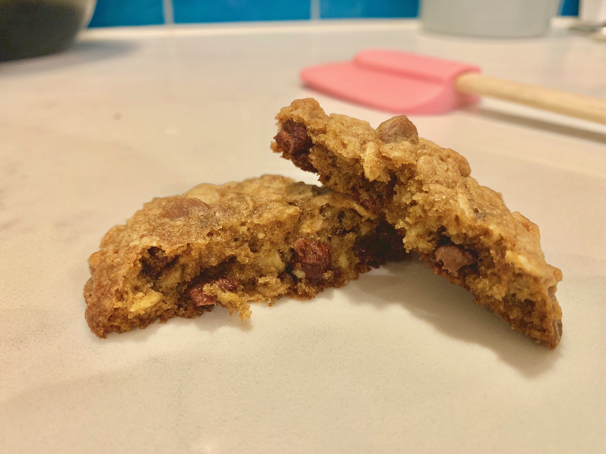
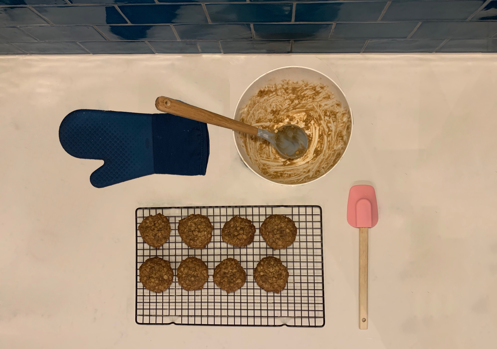

Chocolate chip cookie recipe
29/12/18
Welcome to Mary's Choc-Chip cookie recipe. Mira gave me (Zach) this recipe when I was in Naples in October of 2018. She gave it to me after we baked a dozen, at that time I did not know this was my great grandmother Mary's recipe, but I thought they were delicious. Later, when I was told that this was a family 'secret', I felt honoured. I wanted to treasure it and keep it safe; but a rectangular piece of paper laying on wet, sticky conter-tops isn't the best place for safekeeping. So, I decided to make this website, dedicated to the recipe. Here it can be accessed by any worthy member of the family for as long as the internet lives (so forever I guess?).

Makes 2-3 dozen
INGREDIENTS
1/2 cup (1 stick) butter, softened
1/2 cup firmly packed brown sugar
1/4 cup granulated sugar
1 egg
1/2 teaspoon vanilla extract
3/4 cups flour
1/2 teaspoon baking soda
1/2 teaspoon cinnamon
1/4 teaspoon salt
1 and 1/2 cups oats
1 cup chocolate chips
NOTE: the original recipe has 1/2 cup of choc-chips and 1/2 cup of dried cranberries. (instead of only 1 whole cup of choc-chips.) I personally prefer it with a mixture, but im often alone with that preference.
INSTRUCTIONS
PREHEAT oven to 180°C/350°F
BEAT butter and sugars until creamy.
ADD the egg and vanilla; beat well.
ADD combined flour, baking soda, cinnamon and salt, mix well.
STIR IN chocolate chips and oats, mix well.
DROP by rounded tablespoons onto ungreased baking sheets.
BAKE for 10 to 12 minutes.
COOL on baking sheets for 1 minute; remove to wire rack.
